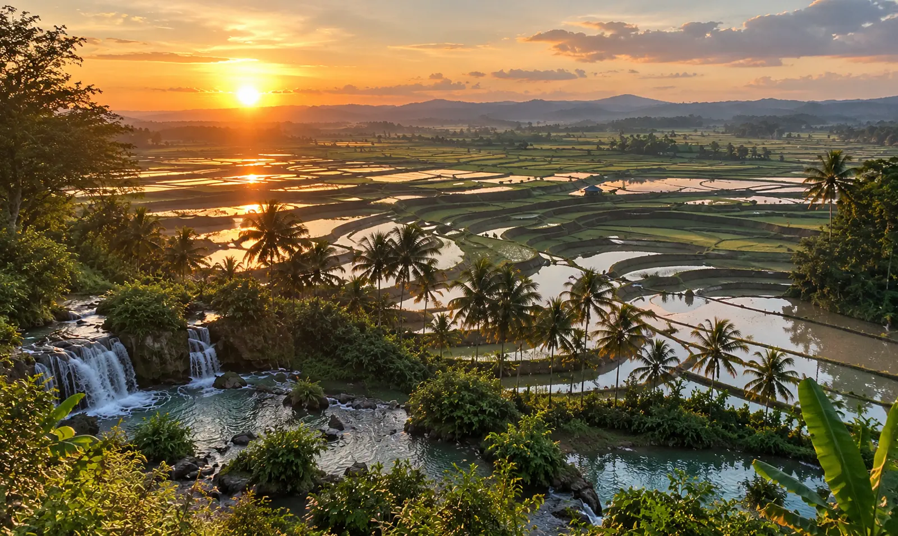

There are places that we visit, and there is West Sumba, which we cross slowly, as if the road itself was part of the journey. Here, the bare hills of the dry season fall suddenly into the Indian Ocean, the villages perch their pointed thatched roofs on sacred hills, and it is not uncommon to come across a horseman at a walk, without a saddle, on the edge of a red earth track. It is the most photographed area of the island — and yet, once there, you quickly understand that no photo does it justice.
It is also the most accessible area: Tambolaka airport is less than an hour from most sites, which often makes it the first stop on a stay in Sumba, before continuing towards the Center or the East. The city itself serves mainly as a gateway — we'll explain why.
Kampung Ratenggaro & the Weekuri Lagoon
We approach Ratenggaro along a sand track, and then suddenly, the roofs appear: thatched cones eight to fifteen meters high, aligned facing the ocean, at the mouth of a river that the inhabitants still cross on foot or in small canoes. It is considered the oldest village on the island. These are not reconstructed houses for visitors - families live there, celebrate their deaths under megalithic tombs placed between the houses, and perpetuate a social order where each house has its place and its rank. We visit in silence, we ask before photographing, and we quickly understand that we are here guests of a world that has little to do with ours.
A few minutes' drive away, the Weekuri lagoon changes completely: still turquoise water, surrounded by black volcanic rock, separated from the ocean by a narrow strip of coral. The waves break just on the other side of the natural wall — here, it's flat and warm. We float there for hours, carried by water so salty that it carries itself; it is still better to stay in the marked areas of clear water, as a few stonefish have been observed in places.

The road that runs along the coast between these two sites is flat and well maintained — it's just the kind of journey where a scooter rented locally comes into its own: you stop wherever you want, for as long as you want, with no one to hurry you.

Associated service
Rent a scooter in Tambolaka
From 150,000 IDR/day (≈ $8 / €7), helmets included. Pick up at the airport or in town.
Weekacura Waterfall
Less known than those in the Center, the Weekacura waterfall is worth it: the track that leads to it is uneven at the end, and there is no official road to the site yet — the GPS coordinates lead to a neighboring village, from where you still have to walk. Many independent visitors get lost or give up before arriving. Those who persist find a waterfall cut into a gorge of clear rock, with a pool deep enough to swim in, and best of all, almost no one else. It's this kind of place that reminds us that Sumba, unlike Bali or Lombok, has not yet been domesticated for tourism.

Associated service
Private driver — day
For tracks that the scooter doesn't like. A driver who knows the way.
Lokomboro Waterfall, the place we don't show you elsewhere
There are places that cannot be found in any classic tourist guide, nor on the maps distributed at the airport. Lokomboro is one of them: a waterfall nestled further north in the area, which even some Waikabubak residents do not know about. There is no parking, no sign, no coconut seller at the entrance — just the sound of falling water, and the feeling of having got your hands on a secret. We do not systematically offer it on our standard tours: it is rather visited on request, with a guide who really knows the route.
Pantai Marosi Beach
A spectacular rocky beach, sculpted by erosion into arches and overhangs — but only at low tide: at high tide, it disappears almost entirely underwater. Access is on foot from the neighboring village, passing through local houses; It is customary, although not obligatory, to buy a coconut on site as a thank you for passing through. Once on the sand, the view opens onto a small village perched high up, and it is not uncommon to see buffaloes coming down to bathe in the sea at the end of the day - a sight that you don't imagine until you see it with your own eyes. A few minutes away, the small cove of Watu Bella offers calmer water, for those who prefer a quiet swim after the rocks of Marosi.
Villages of Praijing & Tarung
Perched on a hill on the outskirts of Waikabubak, Praijing brings together dozens of traditional houses with pointed roofs, some several generations old, rebuilt identically after a fire a few years ago. The nearby village of Tarung is one of the spiritual centers of the Marapu religion — the ancestral Sumbanese belief, still alive here, long before the arrival of Islam or Christianity on the island. We feel a rare continuity there: these are not vestiges, but places still inhabited, still used, where rituals are perpetuated far from view.
What else to do in the West
If you prefer an organized package rather than independence on a scooter, our day trip "Westside" brings together these emblematic places in a single excursion, with a driver who knows every shortcut and every village to stop at. And if you don't have time, don't leave without a horseback ride on the beach at sunset — a different way of saying goodbye to the West, before continuing towards the Center of the island.
Surfers will happily push on to Kerewei Beach, a still confidential wave. For a truly deserted beach, Mananga Aba remains off the tourist radar. And for a glimpse of a craft that is almost never shown, the traditional salt production of Katewel is worth the detour, in the dry season. If your stay falls in February-March, head to Kodi, in the far west of the same regency as Tambolaka, for the Pasola — the most authentic ritual combat on horseback on the island. And for a different stopover a few minutes from the airport, the port village of Waikelo is worth the detour, between the beach and the Bugis community — not to be confused with Waikelo Sawah, its waterfall hidden in the middle of the rice fields, further south. Still in the Kodi sector, Mbawana Beach — its large stone arch — and the promontory of Tanjung Mareha, just above, offer one of the most beautiful coastal panoramas on the entire island. On the road to this same area, the fishing village of Pero offers a different stopover, with its colorful boats and its predominantly Muslim community. A little further south, the village of Manola — whose name means “a group that moves” — tells the story of its migrant ancestors, which remains little known even to those familiar with the island.
Finally, in the Watu Bella sector, don't miss Waru Wora, a village built directly on the cliff face — a rare setting for a traditional village. And for a sunset without a long journey from Tambolaka, Pantai Kita forms pretty natural pools at low tide. Near Weekuri, don't miss Gua Welimbu, a confidential cave with transparent blue water, identifiable only by a discreet sign at the side of the road. Finally, in the Kodi sector, Kampung Buku Bani occupies a special place: it is here that the traditional priests set the date of the Pasola each year.
Finally, don't be surprised if a simple stop on the road turns into an impromptu visit: in small villages like Waikaroko or Yaru Wora, it is not uncommon for a family to spontaneously invite you in for tea — often the best memories of the stay do not appear on any map.